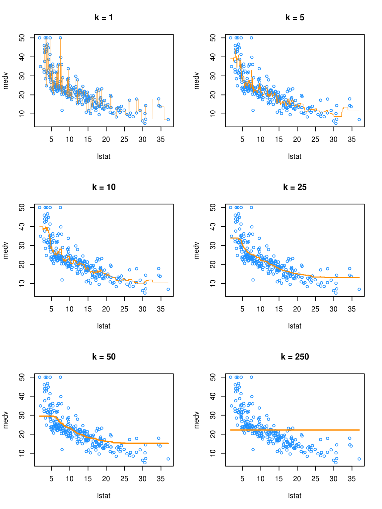
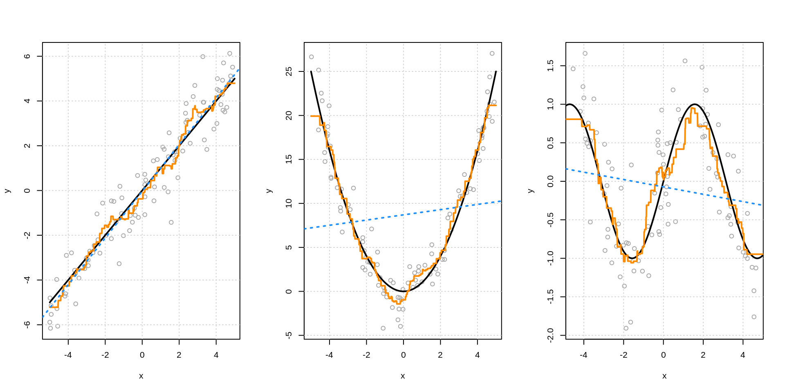
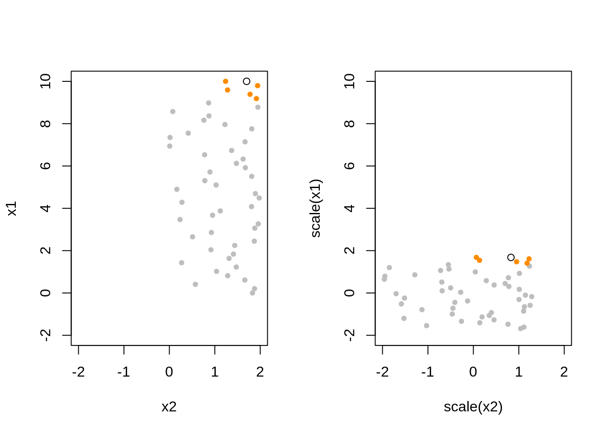

Chapter 7 \(k\)-Nearest Neighbors
Chapter Status: Under Constructions. Main ideas in place but lack narrative. Functional version of much of the code exist but will be cleaned up. Some code and simulation examples need to be expanded.
TODO: last chapter..
- TODO: recall goal
- frame around estimating regression function
7.1 Parametric versus Non-Parametric Models
- TODO: How they estimate…
\[ f(x) = \mathbb{E}[Y \mid X = x] \]
- TODO: parametric approaches assume form
\[ f(x) = \beta_0 + \beta_1 x_1 + \beta_2 x_2 + \ldots + \beta_p x_p \]
- TODO: non-parametric methods consider locality
\[ \hat{f}(x) = \text{average}(\{ y_i : x_i = x \}) \]
- TODO: since often no points will satisfy that requirement
\[ \hat{f}(x) = \text{average}( \{ y_i : x_i \text{ equal to (or very close to) x} \} ) \]
7.2 Local Approaches
- TODO: how do you figure out what is local? what is “close to”?
7.2.1 Neighbors
- example: knn
7.2.2 Neighborhoods
- example: trees
7.3 \(k\)-Nearest Neighbors
- TODO: for a concrete example of a non-parametric method…
\[ \hat{f}_k(x) = \frac{1}{k} \sum_{i \in \mathcal{N}_k(x, \mathcal{D})} y_i \]
- TODO: how is nearest defined?
- usually euclidean, but could be any distance
- TODO: implicit minimization (compared to explicit minimization in lm())
- fitting really just amounts to picking a k, and seeing the training data
- TODO: basic picture
- for various k’s?
7.4 Tuning Parameters versus Model Parameters
- tune (hyper) = how to learn from the data, user specified
- not specific to non-parametric methods
- model = learned from the data, user specifies how many and form
7.5 KNN in R
library(FNN)
library(MASS)
data(Boston)set.seed(42)
boston_idx = sample(1:nrow(Boston), size = 250)
trn_boston = Boston[boston_idx, ]
tst_boston = Boston[-boston_idx, ]X_trn_boston = trn_boston["lstat"]
X_tst_boston = tst_boston["lstat"]
y_trn_boston = trn_boston["medv"]
y_tst_boston = tst_boston["medv"]We create an additional “test” set lstat_grid, that is a grid of lstat values at which we will predict medv in order to create graphics.
X_trn_boston_min = min(X_trn_boston)
X_trn_boston_max = max(X_trn_boston)
lstat_grid = data.frame(lstat = seq(X_trn_boston_min, X_trn_boston_max,
by = 0.01))To perform KNN for regression, we will need knn.reg() from the FNN package. Notice that, we do not load this package, but instead use FNN::knn.reg to access the function. Note that, in the future, we’ll need to be careful about loading the FNN package as it also contains a function called knn. This function also appears in the class package which we will likely use later.
knn.reg(train = ?, test = ?, y = ?, k = ?)INPUT
train: the predictors of the training datatest: the predictor values, \(x\), at which we would like to make predictionsy: the response for the training datak: the number of neighbors to consider
OUTPUT
- the output of
knn.reg()is exactly \(\hat{f}_k(x)\)
pred_001 = knn.reg(train = X_trn_boston, test = lstat_grid, y = y_trn_boston, k = 1)
pred_005 = knn.reg(train = X_trn_boston, test = lstat_grid, y = y_trn_boston, k = 5)
pred_010 = knn.reg(train = X_trn_boston, test = lstat_grid, y = y_trn_boston, k = 10)
pred_050 = knn.reg(train = X_trn_boston, test = lstat_grid, y = y_trn_boston, k = 50)
pred_100 = knn.reg(train = X_trn_boston, test = lstat_grid, y = y_trn_boston, k = 100)
pred_250 = knn.reg(train = X_trn_boston, test = lstat_grid, y = y_trn_boston, k = 250)We make predictions for a large number of possible values of lstat, for different values of k. Note that 250 is the total number of observations in this training dataset.

- TODO: Orange “curves” are \(\hat{f}_k(x)\) where \(x\) are the values we defined in
lstat_grid. So really a bunch of predictions with interpolated lines, but you can’t really tell…
We see that k = 1 is clearly overfitting, as k = 1 is a very complex, highly variable model. Conversely, k = 250 is clearly underfitting the data, as k = 250 is a very simple, low variance model. In fact, here it is predicting a simple average of all the data at each point.
7.6 Choosing \(k\)
- low
k= very complex model. very wiggly. specifically jagged high
k= very inflexible model. very smooth.- want: something in the middle which predicts well on unseen data
that is, want \(\hat{f}_k\) to minimize
\[ \text{EPE}\left(Y, \hat{f}_k(X)\right) = \mathbb{E}_{X, Y, \mathcal{D}} \left[ (Y - \hat{f}_k(X))^2 \right] \]
- TODO: Test MSE is an estimate of this. So finding best test RMSE will be our strategy. (Best test RMSE is same as best MSE, but with more understandable units.)
rmse = function(actual, predicted) {
sqrt(mean((actual - predicted) ^ 2))
}# define helper function for getting knn.reg predictions
# note: this function is highly specific to this situation and dataset
make_knn_pred = function(k = 1, training, predicting) {
pred = FNN::knn.reg(train = training["lstat"],
test = predicting["lstat"],
y = training$medv, k = k)$pred
act = predicting$medv
rmse(predicted = pred, actual = act)
}# define values of k to evaluate
k = c(1, 5, 10, 25, 50, 250)# get requested train RMSEs
knn_trn_rmse = sapply(k, make_knn_pred,
training = trn_boston,
predicting = trn_boston)
# get requested test RMSEs
knn_tst_rmse = sapply(k, make_knn_pred,
training = trn_boston,
predicting = tst_boston)
# determine "best" k
best_k = k[which.min(knn_tst_rmse)]
# find overfitting, underfitting, and "best"" k
fit_status = ifelse(k < best_k, "Over", ifelse(k == best_k, "Best", "Under"))# summarize results
knn_results = data.frame(
k,
round(knn_trn_rmse, 2),
round(knn_tst_rmse, 2),
fit_status
)
colnames(knn_results) = c("k", "Train RMSE", "Test RMSE", "Fit?")
# display results
knitr::kable(knn_results, escape = FALSE, booktabs = TRUE)| k | Train RMSE | Test RMSE | Fit? |
|---|---|---|---|
| 1 | 2.22 | 7.50 | Over |
| 5 | 4.30 | 5.89 | Over |
| 10 | 4.60 | 5.72 | Over |
| 25 | 4.66 | 5.71 | Best |
| 50 | 4.99 | 6.03 | Under |
| 250 | 8.90 | 9.47 | Under |
- TODO: What about ties? why isn’t k = 1 give 0 training error? There are some non-unique \(x_i\) values in the training data. How do we predict when this is the case?
7.7 Linear versus Non-Linear
- TODO; linear relationship example
- lm() works well
- knn “automatically” approximates
- TODO: very non-linear example
- lm() fails badly
- could work if …
- knn “automatically” approximates
- lm() fails badly

7.8 Scaling Data
- TODO: Sometimes “scale” differentiates between center and scale.
Rfunctionscale()does both by default. Outputs variables with mean = 0, var = 1.
sim_knn_data = function(n_obs = 50) {
x1 = seq(0, 10, length.out = n_obs)
x2 = runif(n = n_obs, min = 0, max = 2)
x3 = runif(n = n_obs, min = 0, max = 1)
x4 = runif(n = n_obs, min = 0, max = 5)
x5 = runif(n = n_obs, min = 0, max = 5)
y = x1 ^ 2 + rnorm(n = n_obs)
data.frame(y, x1, x2, x3,x4, x5)
}set.seed(42)
knn_data = sim_knn_data()
TODO: How should we scale the test data?
TODO: Show that linear regression is invariant to scaling. KNN is not. - y = b0 + b1x1 + b2x2 + e - y = b0 + b1x1_ + b2x2_ + e - how are these coefficients related - define how the scaling - RMSE for both, RMSE for both ways KNN
7.9 Curse of Dimensionality
set.seed(42)
knn_data_trn = sim_knn_data()
knn_data_tst = sim_knn_data()# define helper function for getting knn.reg predictions
# note: this function is highly specific to this situation and dataset
make_knn_pred = function(k = 1, X_trn, X_pred, y_trn, y_pred) {
pred = FNN::knn.reg(train = scale(X_trn), test = scale(X_pred), y = y_trn, k = k)$pred
act = y_pred
rmse(predicted = pred, actual = act)
}# TODO: DRY
cod_train_rmse = c(
make_knn_pred (k = 5, X_trn = knn_data_trn["x1"], X_pred = knn_data_trn["x1"],
y_trn = knn_data_trn["y"], y_pred = knn_data_trn["y"]),
make_knn_pred (k = 5, X_trn = knn_data_trn[, 2:3], X_pred = knn_data_trn[, 2:3],
y_trn = knn_data_trn["y"], y_pred = knn_data_trn["y"]),
make_knn_pred (k = 5, X_trn = knn_data_trn[, 2:4], X_pred = knn_data_trn[, 2:4],
y_trn = knn_data_trn["y"], y_pred = knn_data_trn["y"]),
make_knn_pred (k = 5, X_trn = knn_data_trn[, 2:5], X_pred = knn_data_trn[, 2:5],
y_trn = knn_data_trn["y"], y_pred = knn_data_trn["y"]),
make_knn_pred (k = 5, X_trn = knn_data_trn[, 2:6], X_pred = knn_data_trn[, 2:6],
y_trn = knn_data_trn["y"], y_pred = knn_data_trn["y"]))# TODO: DRY
cod_test_rmse = c(
make_knn_pred (k = 5, X_trn = knn_data_trn["x1"], X_pred = knn_data_tst["x1"],
y_trn = knn_data_trn["y"], y_pred = knn_data_tst["y"]),
make_knn_pred (k = 5, X_trn = knn_data_trn[, 2:3], X_pred = knn_data_tst[, 2:3],
y_trn = knn_data_trn["y"], y_pred = knn_data_tst["y"]),
make_knn_pred (k = 5, X_trn = knn_data_trn[, 2:4], X_pred = knn_data_tst[, 2:4],
y_trn = knn_data_trn["y"], y_pred = knn_data_tst["y"]),
make_knn_pred (k = 5, X_trn = knn_data_trn[, 2:5], X_pred = knn_data_tst[, 2:5],
y_trn = knn_data_trn["y"], y_pred = knn_data_tst["y"]),
make_knn_pred (k = 5, X_trn = knn_data_trn[, 2:6], X_pred = knn_data_tst[, 2:6],
y_trn = knn_data_trn["y"], y_pred = knn_data_tst["y"]))cod_results = data.frame(
dimension = c(1, 2, 3, 4, 5),
cod_train_rmse,
cod_test_rmse
)
colnames(cod_results) = c("$p$, Dimension", "Train RMSE", "Test RMSE")
knitr::kable(cod_results, escape = FALSE, booktabs = TRUE)| \(p\), Dimension | Train RMSE | Test RMSE |
|---|---|---|
| 1 | 1.413569 | 1.565495 |
| 2 | 5.407340 | 7.212414 |
| 3 | 8.726803 | 10.629993 |
| 4 | 10.310148 | 12.933572 |
| 5 | 12.101930 | 14.256241 |
- TODO: Local becomes less local.
7.10 Train Time versus Test Time
- TODO: lm vs knn
- lm: “slow” train, “fast” test
- knn: “fast” train, “slow” test
- illustrate with system timings
7.11 Interpretability
- TODO: lm (high) vs knn (low)
- somewhat generalizes to parametric vs non-parametric
7.12 Data Example
Returning to the Boston dataset, we now use all of the available predictors.
X_trn_boston = trn_boston[, !names(trn_boston) %in% c("medv")]
X_tst_boston = tst_boston[, !names(tst_boston) %in% c("medv")]
y_trn_boston = trn_boston["medv"]
y_tst_boston = tst_boston["medv"]scaled_pred = knn.reg(train = scale(X_trn_boston), test = scale(X_tst_boston),
y = y_trn_boston, k = 10)$pred
unscaled_pred = knn.reg(train = X_trn_boston, test = X_tst_boston,
y = y_trn_boston, k = 10)$pred
# test rmse
rmse(predicted = scaled_pred, actual = y_tst_boston) # with scaling## [1] 5.709402rmse(predicted = unscaled_pred, actual = y_tst_boston) # without scaling## [1] 7.540342Here we see that scaling makes a pretty big difference.
Can you improve this model? Can you find a better \(k\)? Can you find a better model by only using some of the predictors?
7.13 rmarkdown
The rmarkdown file for this chapter can be found here. The file was created using R version 3.4.2. The following packages (and their dependencies) were loaded when knitting this file:
## [1] "MASS" "FNN"